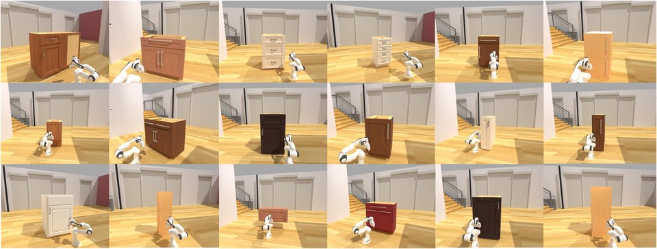
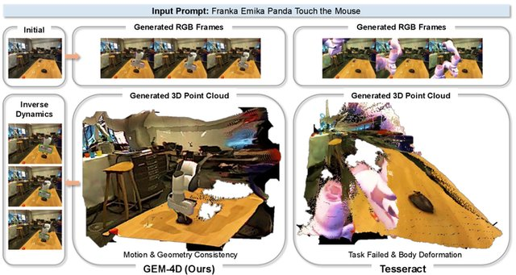
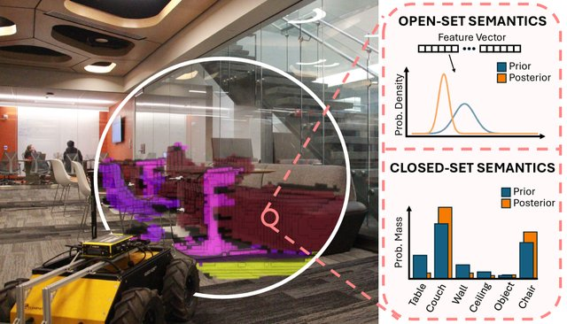
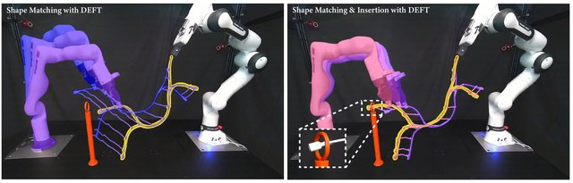
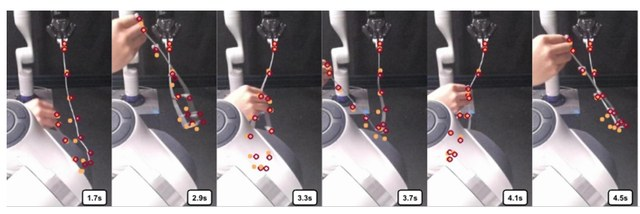
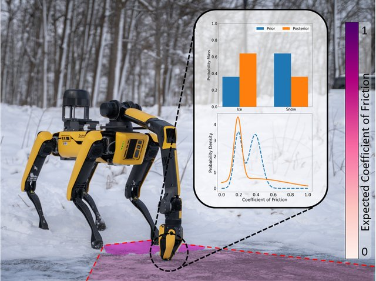
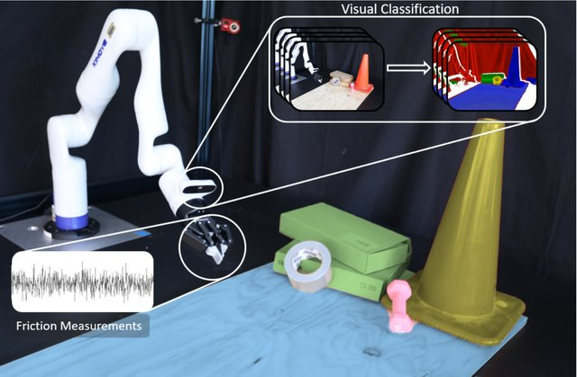
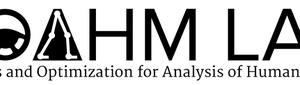

About Me
I am a master's student in Computational Science and Engineering at Harvard University, working with Prof. Mengyu Wang (Harvard AI and Robotics Lab) and Prof. Paul Pu Liang (MIT Media Lab). My research sits at the intersection of robotics, embodied AI, and 3D vision.
I received my B.S.E. in Computer Engineering from the University of Michigan, where I worked with Prof. Ram Vasudevan in the ROAHM Lab on differentiable models of deformable linear objects and multi-modal Bayesian perception.
My work builds physically grounded models that robots can actually act on — from real-time differentiable simulators for deformable objects, to perception that fuses vision and touch, to geometry-aware video world models for manipulation. I'm always open to research discussions and collaboration. Feel free to reach out via yuzhenchen@g.harvard.edu.
Research Interests
My goal is to give robots a physically grounded understanding of the world, the ability to reason about how it will change, and the means to act on it alongside people. My research spans three connected threads:
- Predictive World Models: Building models that can imagine plausible futures — anticipating how a scene will change and what people intend — so robots can reason and act reliably over long horizons.
- Human-Interactive, Agentic Robotics: Moving robots beyond one-shot instruction following toward agents that interact with people as fluently as language models do in software — able to explain their decisions, and to be redirected, corrected, and taught through natural interaction.
- Active Perception & Embodied Understanding: Robots that do not just perceive passively, but actively decide where to look and how to move to understand a dynamic 3D world — its geometry, motion, and interactions — and act robustly within it.
News
- [Jul. 2026] 🎉 Act2See is accepted by the RSS 2026 FM4RoboPlan Workshop.
- [Jul. 2026] 🎉 World Cognition Model (WCM) is accepted by the RSS 2026 FM4RoboPlan Workshop.
- [Jun. 2026] 🎓 Awarded the OMPP Summer Research Fellowship at Harvard University.
- [Jun. 2026] 🎉 GEM-4D is accepted by ECCV 2026.
- [Jun. 2026] 🏆 GEM-4D — Best Paper Award, Runner-Up at the CVPR 2026 WMAS Workshop.
- [Jun. 2026] ✨ GEM-4D — Spotlight at the CVPR 2026 3D-LLM/VLA Workshop.
- [Mar. 2026] 🎉 SLIM-VDB is accepted by IEEE RA-L.
- [May. 2025] 📊 MatPredict — a dataset and benchmark for learning material properties of indoor objects — is released.
- [Feb. 2025] 🤖 DEFT is on arXiv — differentiable branched discrete elastic rods for furcated DLOs.
- [Sep. 2024] 🤖 DEER is accepted by CoRL 2024.
- [Apr. 2024] ✋ You've Got to Feel It to Believe It is accepted by RSS 2024.
- [Oct. 2023] 🏆 Multi-Modal Semantic Perception Using Bayesian Inference — Best Poster at the IROS 2023 Workshop.
Publications
* denotes equal contribution.
-
WCM: World-Cognition Model for Generalizable Human-Robot Interaction
A human-centered embodied agent built on the SLAK architecture with an asynchronous runtime — it stays transparent about why it acts and can be interactively taught long-horizon tasks, reaching 73.8% success across nine real-world human–robot interaction tasks. Accepted to the RSS 2026 FM4RoboPlan Workshop.
-

Act to See: Structured Articulated Representations through Robot Interaction
A robot autonomously inspects an unknown articulated object and builds a structured articulated representation (an explicit URDF) online, frame-by-frame, through active interaction. Accepted to the RSS 2026 FM4RoboPlan Workshop.
-

GEM-4D: Geometry-Enhanced Video World Models for Robot Manipulation
Distills dense 4D correspondence supervision from a geometry foundation model into video world models, lifting real-world manipulation success from 61% to 81%. Best Paper Runner-Up (CVPR 2026 WMAS Workshop); Spotlight (CVPR 2026 3D-LLM/VLA Workshop).
-

SLIM-VDB: A Real-Time 3D Probabilistic Semantic Mapping Framework
A real-time probabilistic semantic mapping framework built on sparse VDB volumes for large-scale 3D scenes.
-
MatPredict: A Dataset and Benchmark for Learning Material Properties of Diverse Indoor Objects
A dataset and benchmark pairing 18 indoor objects with 14 materials, for inferring physical material properties from camera images.
-

DEFT: Differentiable Branched Discrete Elastic Rods for Modeling Furcated DLOs in Real-Time
Extends differentiable discrete elastic rods to branched topologies, enabling real-time modeling of furcated deformable linear objects.
-

Differentiable Discrete Elastic Rods for Real-Time Modeling of Deformable Linear Objects
A differentiable discrete elastic rod formulation that identifies material parameters and predicts DLO dynamics in real time.
-

You've Got to Feel It to Believe It: Multi-Modal Bayesian Inference for Semantic and Property Prediction
Fuses vision and touch in a Bayesian framework to jointly infer object semantics and physical properties.
-

Multi-Modal Semantic Perception Using Bayesian Inference
Bayesian multi-modal fusion for semantic perception in robot manipulation. Best Poster, IROS 2023 Workshop.
No publications match this filter.
Education
Harvard University, Cambridge, MA
M.S. in Computational Science and Engineering
Coursework: Video Generation, Multi-modal World Models & VLA.
University of Michigan, Ann Arbor, MI
B.S.E. in Computer Engineering · GPA 3.9 / 4.0
Machine Learning, Computer Vision, SLAM, Robot Perception, GPU Parallel Computation, Robot 3D Reconstruction.
Experience
Harvard AI and Robotics Lab
Research Assistant · advised by Prof. Mengyu Wang
Geometry-enhanced video world models for robot manipulation (GEM-4D); VLM-guided active URDF reconstruction (Act2See); interpretable medical VLMs.
Multisensory Intelligence Lab, MIT Media Lab
Research Assistant · advised by Prof. Paul Pu Liang
Geometry-enhanced video world models for robot manipulation (GEM-4D).

ROAHM Lab
Research Assistant · advised by Prof. Ram Vasudevan
Real-time differentiable modeling of deformable linear objects (DEER); multi-modal Bayesian semantic perception; conformalized safe motion planning (CROWS); material-property learning from images (MatPredict, with Prof. Arpan Kusari).
Honors & Awards
- [2026] 🎓 OMPP Summer Research Fellowship, Harvard University.
- [2026] 🏆 Best Paper Award, Runner-Up — CVPR 2026 WMAS Workshop.
- [2026] ✨ Spotlight — CVPR 2026 3D-LLM/VLA Workshop.
- [2023] 🥇 Best Poster Award — IROS 2023.
- [2023–24] 🎖️ James B. Angell Scholar, University of Michigan.
- [2022–25] 📜 Dean's List, University of Michigan.
Services & Teaching
- [2026–] Robotics Community Event Organizer, MIT CHIEF.
- [2022–25] Teaching Assistant, EECS 442 (Computer Vision) & Physics 140X, University of Michigan.
- [2023–24] Departmental Ambassador, ENGR 110 & UMich Robotics Department.
- [2023] Student Tutor, UMich Engineering Center for Academic Success.